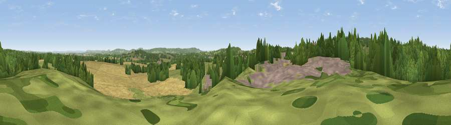

Viewpoint near Downhead
#21134 in England · top 39% of its area beats it · near Downhead · path 134 mWhere it is
The exact computed spot (ST 70425 44175). Click the marker for map links.
Public access: the nearest public right of way is about 134 m away — the final stretch may cross private land. Computed from Natural England's CRoW access layer and OpenStreetMap rights of way — not the legal definitive map. Always verify locally.
The view, rendered

A 360° render of this exact spot computed from the terrain model, tree cover and land cover — summer colours, afternoon light, calibrated against photographs of famous viewpoints. Real trees, hedges and buildings will differ in detail.
The panorama
Grey silhouette: terrain skyline in each direction (720 bearings, Earth curvature and refraction included). Dashed green: skyline with trees (+15 m) and buildings (+8 m) as obstacles. Blue strip: how far the ground is visible on each bearing.
Where the view opens
Wedge length = distance to the farthest visible ground on that bearing (vegetation-aware). Rings at 10, 25 and 50 km.
What fills the view
34% woodland · 29% grassland · 26% cropland · 10% built-up ·
Angular shares of the visible panorama (visual magnitude), not map area. Landscape diversity 0.58 (0–1 Shannon).
Key numbers
More beautiful places nearby
The staircase of upgrades: each row has a higher view potential than everything closer. Driving times are estimates from straight-line distance, calibrated against real road routing — check an actual route before setting out.
| Place | Direction | Drive | Score |
|---|---|---|---|
| Viewpoint near East Cranmore | W · 1 km | ~4 min | 69.2 |
| Viewpoint near Oakhill | WNW · 6 km | ~13 min | 71.3 |
| Viewpoint near Milton Clevedon | SSW · 8 km | ~17 min | 73.9 |
| Lamyatt Beacon | SSW · 9 km | ~17 min | 74.6 |
| Viewpoint near Lamyatt | SSW · 9 km | ~18 min | 77.8 |
| Beacon Batch | WNW · 26 km | ~41 min | 79.4 |
| Bleadon Hill [Loxton Hill] | WNW · 36 km | ~55 min | 79.6 |
| Lewesdon Hill | SSW · 51 km | ~72 min | 83.3 |
51.19602, -2.42463 · source: screening · position refined by local search. Computed location — check access rights before visiting.